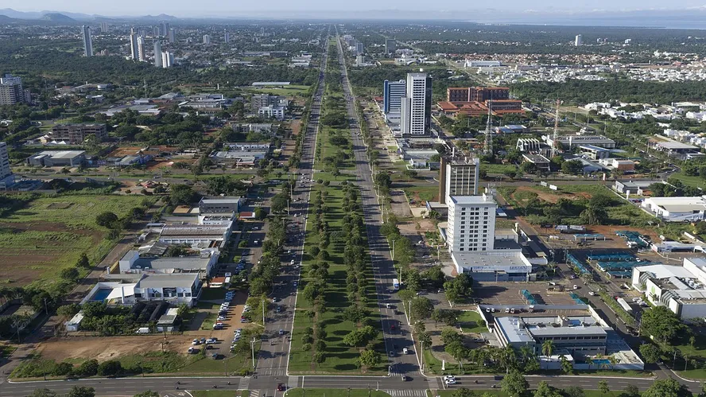

Tocantins é o estado mais jovem do Brasil, criado em 1988. Sua capital é Palmas, com uma população de aproximadamente 1,5 milhão de habitantes. O estado está localizado no centro-norte do país, com limites com Goiás, Mato Grosso, Pará, Maranhão, Piauí e Bahia.
